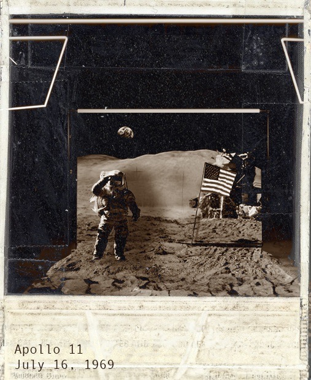
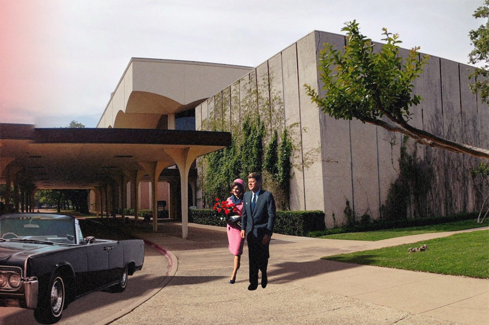
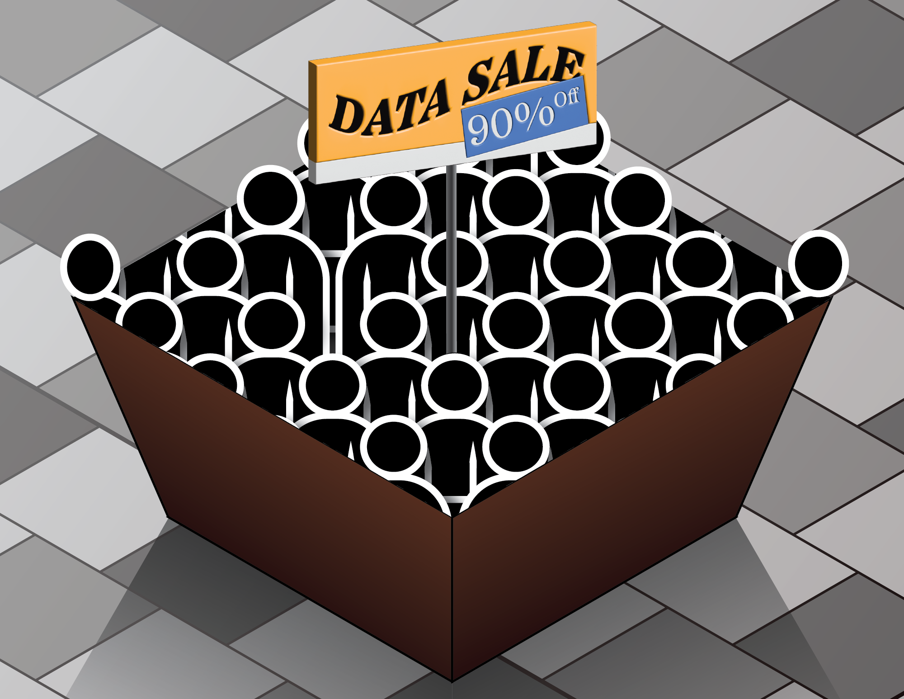

Counterfactual History
1 workCreate a layered Photoshop image that explores either counterfactual history or speculative fiction — a kind of Time Machine. Look into moments in history you might want to change. Find an event and imagine different outcomes. What would have changed, and how can you show it visually?
Photography has always been capable of fiction: from Soviet darkroom retouching that erased political enemies to today's AI generation. This project places students in that tradition.

The Attention Economy
3 worksIn 1971, Herbert A. Simon wrote: "A wealth of information creates a poverty of attention." This project asks students to respond to the attention economy through Illustrator — how digital platforms compete for and monetise our time, focus, and data.
Possible approaches included typographically-focused work, data illustration, surveillance mapping, and images that help resist or reflect on our own complicity. Submitted in two iterations with a one-on-one critique between them.



Redux
2 worksRedux means to bring back, or happen again. The creative process is always a redux. Students returned to one of their earlier projects — counterfactual history, the attention economy, or race and technology — and developed it substantially further, introducing time and motion through After Effects.
Submitted as a 5–15 second 720p h.264 .mp4, the work brings new elements, rethought compositions, and a focus on rhythm and transition.